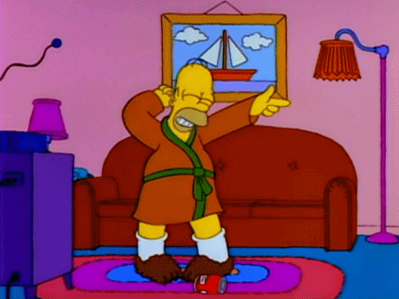

VDM 2016 – Episódio 3 – Segunda defesa
Compartilhe esse post nas redes sociais...
Olá Homelabers!
Mais uma semana que esse pobre blog fica as moscas de novidades. Eu juro mesmo que queria estar produzindo mais material para vocês, mas o VDM está tomando praticamente todo o meu tempo livre.
A segunda tarefa foi ainda mais punk do que a primeira. O foco era segurança e como eu não trabalho com segurança no meu dia-a-dia, tive que correr atrás de vários conceitos para chegar a uma solução.
Novamente, eu esperava cair, mas felizmente consegui passar para a terceira fase. E já adianto, a tarefa da terceira fase está mais complicada ainda.
Vou deixar o video ai para quem quiser assistir a minha defesa que começa no minuto 06:25
Desta vez, os candidatos tiveram somente 60 segundos para fazer a apresentação. Eu estava bem mais tranquilo (tomar umas cervejas antes ajuda bastante) do que da primeira vez.
O que eu aprendi nessa fase:
* Pensar em segurança, quando você está arquitetando alguma coisa (um sistema, um datacenter, etc) é sempre importante, mesmo que você não esteja acostumado com isso.
* Vá mais direto ao ponto ainda.
* Não deixe para última hora
* [O delay de uma comunicação entre a terra e a lua é de 1.3 segundos](https://en.wikipedia.org/wiki/Earth%E2%80%93Moon%E2%80%93Earth_communication) :)
* Astrofísica é legal
1.3 second delay I will NEVER forget this! @Texiwill @vdmchallenge #VirtualDesignMaster
— Homelaber Brasil (@homelaber) 8 de julho de 2016
Vou deixar também o meu documento de design para vocês conferirem.
O próximo episódio do Virtual Design Master 2016 acontece no dia 14/07 as 21hs (horário de Brasília) e pode ser acompanhado ao vivo pelo link www.virtualdesignmaster.io/live
Continuo contando com a torcida de todos vocês!
Até a próxima pessoa!

Uhuuullll
Compartilhe esse post nas redes sociais...Valdecir Carvalho
Nerd e pai orgulhoso da Mariana e João. Profissional Sênior de TI com foco em arquitetura de infraestrutura e cloud computing. Blogueiro, podcaster, palestrante, amante de comunidades técnicas, fotógrafo aposentado e adora jogos antigos.
#vExpert · #VMUGLeader · #VUGBrasil · #vBronwBagBrasil · #VeeamVanguard